各种参数
此处整理，借贷协议AAVE的借贷利率相关参数：
AAVE中的LTV
- AAVE中的LTV=Loan-To-Value=贷款价值
- ~= Collateral Factor=抵押率
- 举例
- 存入100块，能贷出多少钱
- 举例：存入100，能贷出75，就是：LTV=75%
- 存入100块，能贷出多少钱
- 借贷池参数
- 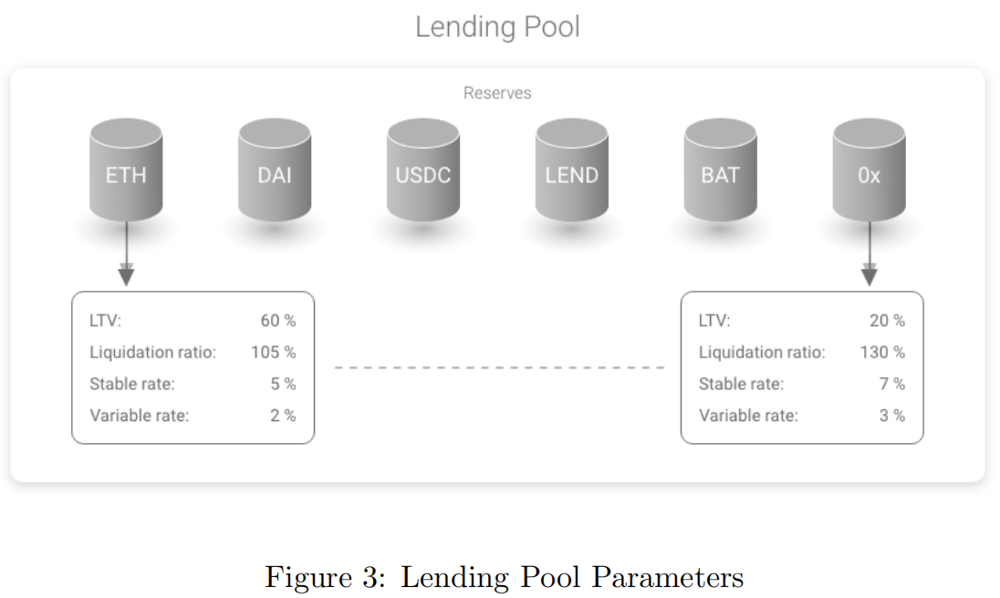
- 举例
- 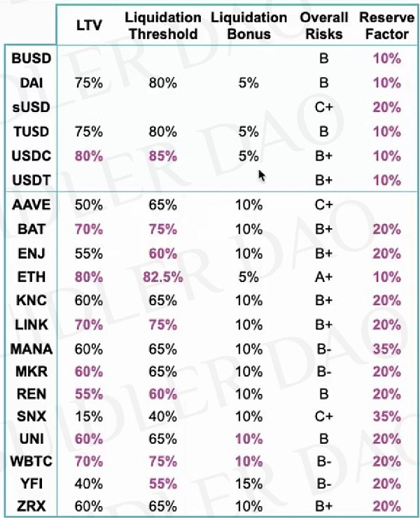
Rv0=基础可变借贷利率
- R(v0) = Base Variable Borrow Rate = 基础可变借贷利率
- 常数为Bt = 0。以射线表示
- Constant for B(t)=0. Expressed in ray
- 相关代码
- baseVariableBorrowRate
- 常数为Bt = 0。以射线表示
Rv=可变借贷利率
- R(v) = Variable Borrow Rate =可变借贷利率
- 公式
- 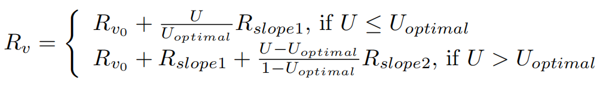
- 此利率模型可校正主要利率:
- 当 U = 0： R(v) = R(v0)
- 当U = Uoptimal：R(v) = R(v0) + Rslope1
- 高于 Uoptimal：考虑到资金成本，利率急剧上升
- 公式
Rs=稳定借贷利率
- R(s =) Stable Borrow Rate = Current Stable Borrow Rate = 稳定借贷利率
- 计算公式
- 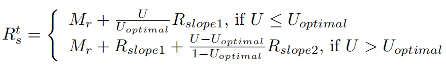
- 说明
- M(r)：平均市场贷款利率
- the average market lending rate
- R(slope1)：在非最优条件下的利率，斜率随着U的增加而增加
- the interest rate slope below Uoptimal, increases the rate as U increases.
- R(slope2) ：超出非最优的利率，斜率随着U与非最优之差的增大而增大
- the interest rate slope beyond Uoptimal, increases as the difference between U and Uoptimal increases.
- U：是利用率
- is the utilization rate.
- M(r)：平均市场贷款利率
- 注意
- Rs不会影响现有的稳定利率头寸-这只适用于新开的头寸
- R(s) does NOT impact existing stable rates positions – this is applied only to new opened positions.
- Rs不会影响现有的稳定利率头寸-这只适用于新开的头寸
- 以射线表示
- Expressed in ray
- 计算公式
Rslope1=斜率1
- R(slope1) = Interest Rate slope below U(optimal)
- 常数，当U <Uoptimal 时，表示利率与利用率的比例。以射线表示
- Constant representing the scaling of the interest rate versus the utilization, when U < U(optimal). Expressed in ray
- 常数，当U <Uoptimal 时，表示利率与利用率的比例。以射线表示
Rslope2=斜率2
- R(slope2) = Interest Rate slope above U(optimal)
- 常数表示利率与利用率的比例，当U≥ U(optimal)。以射线表示
- Constant representing the scaling of the interest rate versus the utilization, when U ≥ U(optimal). Expressed in ray
- 常数表示利率与利用率的比例，当U≥ U(optimal)。以射线表示
Ro=总体借贷利率
- R(o) = Overall borrow rate=总体借贷利率
- 公式
- 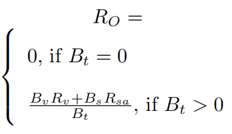
- 说明
- 准备金的总借款率，以总可变借款Bv与总稳定借款b的加权平均值计算
- Overall borrow rate of the reserve, calculated as the weighted average between the total variable borrows Bv and the total stable borrows Bs
- 准备金的总借款率，以总可变借款Bv与总稳定借款b的加权平均值计算
- 公式
Mr=平均市场借贷利率
- Mr=平均市场借贷利率=average Market lending rate
- 公式
- 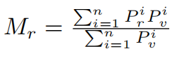
- 参数说明
- i：平台个数
- M(r：)平均市场借贷利率
- P(r)(i)：借贷利率=贷款利率
- P(i)(v)：借贷量
- 含义解释
- 基本稳定借款利率，以射线表示
- 市场价格将每日更新，最初由Aave
- 公式
Rsa=平均稳定借贷利率
- Rsa = Average Stable rate borrow rate=平均稳定借贷利率
- 公式
- 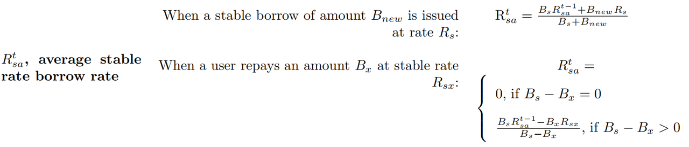
- 说明
- 详见函数
- decreaseTotalBorrowsStableAndUpdateAverageRate()
- increaseTotalBorrowsStableAndUpdateAverageRate()
- 以射线表示
- Expressed in ray
- 详见函数
- 公式
Rl=当前流动性比例
- R(l)=current Liquidity rate=当前流动性比例
- 公式
- 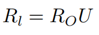
- 说明
- 总借款利率R(O)与利用率U的函数
- Function of the overall borrow rate RO and the utilization rate U
- 总借款利率R(O)与利用率U的函数
- 公式
Bx=PB=用户本金借款余额
- User Principal borrow Balance=用户本金借款余额
- 旧=AAVE V1
- 变量：B(x)
- 说明
- 当用户打开借贷头寸时存储的余额。在多次借款的情况下，复利每次累积，它成为新的本金借款余额
- Balance stored when a user opens a borrow position. In case of multiple borrows, the compounded interest is cumulated each time and it becomes the new principal borrow balance
- 当用户打开借贷头寸时存储的余额。在多次借款的情况下，复利每次累积，它成为新的本金借款余额
- 新=AAVE V2
- 变量：PB(x)
- 说明
- 当用户打开借贷头寸时存储的余额。在多次借款的情况下，复利每次累积，它成为新的本金借款余额。
- 旧=AAVE V1
Bvcx=VI=用户累计浮动借款指数
- B(t)(vcx)=user Cumulated Variable borrow indeX=用户累计可变利率借款指数 = 用户借款累积指数=用户累计浮动借款指数
- 旧=AAVE V1
- 公式
- 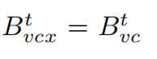
- 说明
- 特定用户的变量借款指数，在用户打开（新增？）变量借款头寸时存储
- Variable borrow index of the specific user, stored when a user opens a variable borrow position
- 特定用户的变量借款指数，在用户打开（新增？）变量借款头寸时存储
- 公式
- 新=AAVE V2
- 公式
- 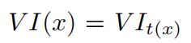
- 说明
- 特定用户的可变借款指数，在用户新开可变借款头寸时存储
- 公式
- 旧=AAVE V1
Bvc=VIt=累计可变利率借款指数
- B(t)(vc)=Cumulated Variable Borrow index=累计可变利率借款指数 = 借款累积指数=累计浮动借款指数
- 旧=AAVE V1
- 公式
- 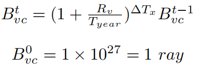
- 说明
- 由变量借款Bv按利率Rv累积的利息，在借款、存款、偿还、赎回、切换利率、清算事件发生时更新
- 公式
- 新=AAVE V2
- 含义
- 从池子首次发生用户操作时，累计到现在，每单位借款债务，共变成多少债务
- 变量借款VB在一段时间∆T内以可变利率V R累计的利息
- 公式
- 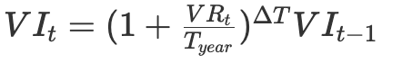
- 说明
- 在发生借款、存款、偿还、赎回、掉期、清算事件时更新
- 这里使用复利公式计算利息，每次存钱、取钱、借钱、赎回、清算操作等动作
- 因为在链上计算成本高，AAVE使用了泰勒展开式模拟这个公式，为了避免昂贵的求幂，使用二项式近似进行计算。
- 不举例子了
- 任务每次计算复利的时候，VIt都会大一点点，跟流动性累计指数相似。
- 注意这里的复利周期是每秒计算的
- 代码
- CoreLibrary
- 储备和用户数据的数据结构
- CoreLibrary
- 含义
- 旧=AAVE V1
struct UserReserveData {
//principal amount borrowed by the user.
uint256 principalBorrowBalance;
//cumulated variable borrow index for the user. Expressed in ray
uint256 lastVariableBorrowCumulativeIndex;
//origination fee cumulated by the user
uint256 originationFee;
// stable borrow rate at which the user has borrowed. Expressed in ray
uint256 stableBorrowRate;
uint40 lastUpdateTimestamp;
//defines if a specific deposit should or not be used as a collateral in borrows
bool useAsCollateral;
}
struct ReserveData {
/**
* @dev refer to the whitepaper, section 1.1 basic concepts for a formal description of these properties.
**/
//the liquidity index. Expressed in ray
uint256 lastLiquidityCumulativeIndex;
//the current supply rate. Expressed in ray
uint256 currentLiquidityRate;
//the total borrows of the reserve at a stable rate. Expressed in the currency decimals
uint256 totalBorrowsStable;
//the total borrows of the reserve at a variable rate. Expressed in the currency decimals
uint256 totalBorrowsVariable;
//the current variable borrow rate. Expressed in ray
uint256 currentVariableBorrowRate;
//the current stable borrow rate. Expressed in ray
uint256 currentStableBorrowRate;
//the current average stable borrow rate (weighted average of all the different stable rate loans). Expressed in ray
uint256 currentAverageStableBorrowRate;
//variable borrow index. Expressed in ray
uint256 lastVariableBorrowCumulativeIndex;
//the ltv of the reserve. Expressed in percentage (0-100)
uint256 baseLTVasCollateral;
//the liquidation threshold of the reserve. Expressed in percentage (0-100)
uint256 liquidationThreshold;
//the liquidation bonus of the reserve. Expressed in percentage
uint256 liquidationBonus;
//the decimals of the reserve asset
uint256 decimals;
/**
* @dev address of the aToken representing the asset
**/
address aTokenAddress;
/**
* @dev address of the interest rate strategy contract
**/
address interestRateStrategyAddress;
uint40 lastUpdateTimestamp;
// borrowingEnabled = true means users can borrow from this reserve
bool borrowingEnabled;
// usageAsCollateralEnabled = true means users can use this reserve as collateral
bool usageAsCollateralEnabled;
// isStableBorrowRateEnabled = true means users can borrow at a stable rate
bool isStableBorrowRateEnabled;
// isActive = true means the reserve has been activated and properly configured
bool isActive;
// isFreezed = true means the reserve only allows repays and redeems, but not deposits, new borrowings or rate swap
bool isFreezed;
}
- 更新
- 与v1版本不同的是，在更新储备状态时会将一部分产生的利息收入存入金库（treasury）中，具体的比例由储备的reserveFactor（configuration字段的一个值）来确定
/**
* @dev Updates the liquidity cumulative index and the variable borrow index.
* @param reserve the reserve object
**/
function updateState(DataTypes.ReserveData storage reserve) internal {
uint256 scaledVariableDebt =
IVariableDebtToken(reserve.variableDebtTokenAddress).scaledTotalSupply();
uint256 previousVariableBorrowIndex = reserve.variableBorrowIndex;
uint256 previousLiquidityIndex = reserve.liquidityIndex;
uint40 lastUpdatedTimestamp = reserve.lastUpdateTimestamp;
(uint256 newLiquidityIndex, uint256 newVariableBorrowIndex) =
_updateIndexes(
reserve,
scaledVariableDebt,
previousLiquidityIndex,
previousVariableBorrowIndex,
lastUpdatedTimestamp
);
_mintToTreasury(
reserve,
scaledVariableDebt,
previousVariableBorrowIndex,
newLiquidityIndex,
newVariableBorrowIndex,
lastUpdatedTimestamp
);
}
Bxc=用户复利借款余额
- B(x)(c)=user Compounded borrow Balance=用户复利借款余额
- 旧=AAVE V1
- 公式
- 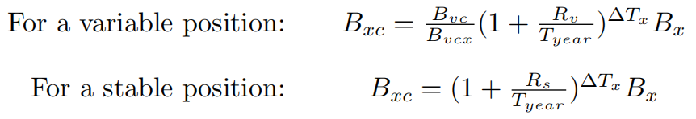
- 说明
- 本金Bx加上累计利息
- Principal Bx plus the cumulated interests
- 本金Bx加上累计利息
- 公式
- 新=AAVE V2
- 代码
- 旧=AAVE V1
struct RepayLocalVars {
uint256 principalBorrowBalance;
uint256 compoundedBorrowBalance;
uint256 borrowBalanceIncrease;
bool isETH;
uint256 paybackAmount;
uint256 paybackAmountMinusFees;
uint256 currentStableRate;
uint256 originationFee;
}
function repay(address _reserve, uint256 _amount, address payable _onBehalfOf)
external
payable
nonReentrant
onlyActiveReserve(_reserve)
onlyAmountGreaterThanZero(_amount)
{
// Usage of a memory struct of vars to avoid "Stack too deep" errors due to local variables
RepayLocalVars memory vars;
(
vars.principalBorrowBalance,
vars.compoundedBorrowBalance,
vars.borrowBalanceIncrease
) = core.getUserBorrowBalances(_reserve, _onBehalfOf);
...
Dassett=债务总额
- D(asset)(t = )Total Debt=债务总额
- 公式
- 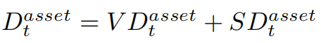
- 说明
- 借入的流动资金总额
- Total amount of liquidity borrowed
- 借入的流动资金总额
- 公式
VDassett=可变债务代币总额
- VD(asset)(t = )Total Variable Debt Tokens=可变债务代币总额
- 说明
- 以债务代币表示的可变利率借入的流动性总额
- Total amount of liquidity borrowed at a variable rate represented in debt tokens
- 以债务代币表示的可变利率借入的流动性总额
- 说明
SDassett=稳定债务代币总额
- SD(asset)(t = )Total Stable Debt Token=稳定债务代币总额
- 说明
- 以债务代币表示的稳定利率借入的流动性总额
- Total amount of liquidity borrowed at a stable rate represented in debt tokens
- 以债务代币表示的稳定利率借入的流动性总额
- 说明
Lassett=资产的总流动性
- L(asset)(t = )Total Liquidity of an asset=资产的总流动性
- 说明
- 资产准备金中可用的流动资金总额。该值的小数取决于货币的小数
- Total amount of liquidity available in the assets reserve. The decimals of this value depend on the decimals of the currency
- 资产准备金中可用的流动资金总额。该值的小数取决于货币的小数
- 说明
Ci=LIt=流动性累计指数
C(t)(i)=Cumulated liquidity Index=流动性累计指数
- 旧=AAVE v1
- 公式
- 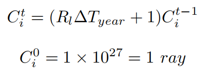
- 说明
- 准备金在时间间隔∆T期间累积的利息，在发生借款、存款、偿还、赎回、掉期、清算事件时更新。
- Interest cumulated by the reserve during the time interval ∆T , updated whenever a borrow, deposit, repay, redeem, swap, liquidation event occurs
- 准备金在时间间隔∆T期间累积的利息，在发生借款、存款、偿还、赎回、掉期、清算事件时更新。
- 公式
新=AAVE v2
- 公式
- 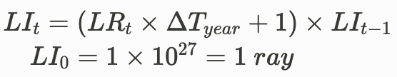
- 说明
- 从池子首次发生用户操作时，累计到现在，每单位存款本金，变成多少本金（含利息收入）
- 存储
struct ReserveData { //the liquidity index. Expressed in ray uint128 liquidityIndex; } 更新
function _updateIndexes( DataTypes.ReserveData storage reserve, uint256 scaledVariableDebt, uint256 liquidityIndex, uint256 variableBorrowIndex, uint40 timestamp ) internal returns (uint256, uint256) { uint256 currentLiquidityRate = reserve.currentLiquidityRate; uint256 newLiquidityIndex = liquidityIndex; //only cumulating if there is any income being produced if (currentLiquidityRate > 0) { uint256 cumulatedLiquidityInterest = MathUtils.calculateLinearInterest(currentLiquidityRate, timestamp); newLiquidityIndex = cumulatedLiquidityInterest.rayMul(liquidityIndex); require(newLiquidityIndex <= type(uint128).max, Errors.RL_LIQUIDITY_INDEX_OVERFLOW); reserve.liquidityIndex = uint128(newLiquidityIndex); } reserve.lastUpdateTimestamp = uint40(block.timestamp); } }
- 公式
- 旧=AAVE v1
Itn=NIt=归一化收入
- I(t)(n)=reserve Normalized Income=归一化收入
- 含义：每单位存款本金，未来将变成多少本金（含利息收入）
- 旧=AAVE V1
- 公式
- 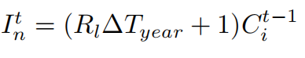
- 说明
- 准备金累积的持续利息
- Ongoing interest cumulated by the reserve
- 准备金累积的持续利息
- 公式
- 新=AAVE V2
- 公式
- 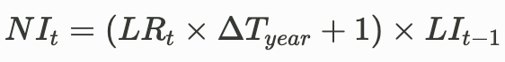
- 公式
- 代码
- getNormalizedIncome
/**
* @dev Returns the ongoing normalized income for the reserve
* A value of 1e27 means there is no income. As time passes, the income is accrued
* A value of 2*1e27 means for each unit of asset one unit of income has been accrued
* @param reserve The reserve object
* @return the normalized income. expressed in ray
**/
function getNormalizedIncome(DataTypes.ReserveData storage reserve)
internal
view
returns (uint256)
{
uint40 timestamp = reserve.lastUpdateTimestamp;
//solium-disable-next-line
if (timestamp == uint40(block.timestamp)) {
//if the index was updated in the same block, no need to perform any calculation
return reserve.liquidityIndex;
}
uint256 cumulated =
MathUtils.calculateLinearInterest(reserve.currentLiquidityRate, timestamp).rayMul(
reserve.liquidityIndex
);
return cumulated;
}